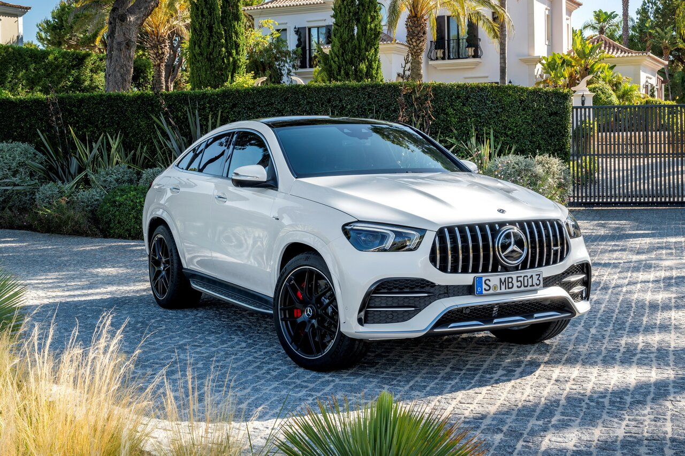

Mercedes-Benz V167-ը գերմանական Mercedes-Benz ավտոմոբիլային ընկերության միջին չափի քրոսովեր ամենագնացն է, M-Class-ի չորրորդ սերունդը / GLE-Class-ի երկրորդ սերունդը: Փոխարինված Mercedes-Benz W166-ը 2018թ. Այն ներկայացվել է նույն թվականի հոկտեմբերին Փարիզի 64-րդ ավտոսրահում։ Արտադրությունը տեղի է ունենում ԱՄՆ-ի Ալաբամա նահանգի Տուսկալուսա քաղաքում գտնվող Mercedes-Benz գործարանում և Ռուսաստանի Էսիպովոյում գտնվող Mercedes-Benz գործարանում:
Mercedes-Benz C167-ը գերմանական Mercedes-Benz ավտոմոբիլային
2018 թվականի հոկտեմբերին Փարիզի 64-րդ ավտոսրահում ներկայացվեց չորրորդ սերնդի Mercedes-Benz V167 քրոսովերը։ Այն ստացել է նոր և ժամանակակից կորպորատիվ դիզայն, ամբողջովին վերափոխված ինտերիեր և բազմաթիվ նոր հնարավորություններ ու համակարգեր, որոնք այս մեքենան դարձնում են էլ ավելի հարմարավետ և հարմարավետ վարելու համար:
Տեղադրվել է ստերեո տեսախցիկ, ինչպես S-Class-ը, որը սկանավորում է ճանապարհի մակերեսը՝ պատրաստելով կախոցը առաջիկա անկանոնությունների համար։ապրանքանիշի քրոսովեր և կուպե է, որը կառուցվել է Mercedes-Benz V167-ի հիման վրա 2019 թվականից և պատվիրելու համար հասանելի է 2019 թվականի նոյեմբերից։ Ինչպես նախորդ Mercedes-Benz C292-ը, մեքենան կրկին կվաճառվի որպես GLE Coupe:
Ներքին որակները կարևոր են
Թվային դիսփլեյները, մեծ ծակոտկեն փայտե զարդարանքը և SUV-ի վառ դիզայնի տարրերը վկայում են հսկայական ներքին ուժի մասին: